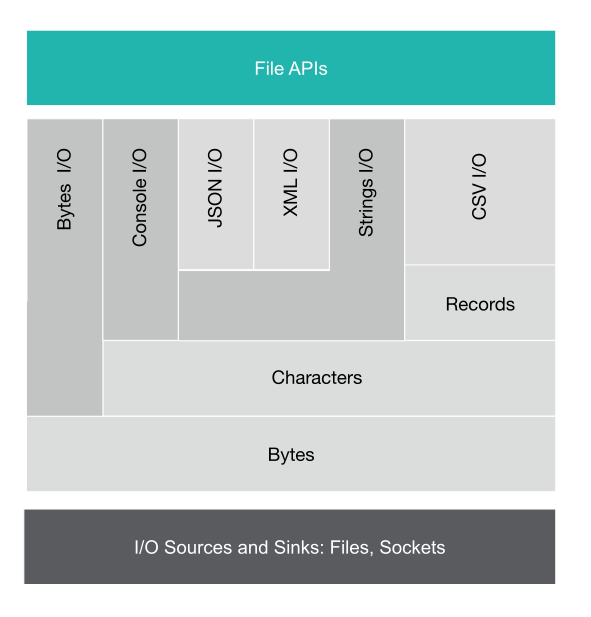

Module : io
Module : io
Module Overview
This module is designed to support input and output operations via channels in a canonical way, either in a blocking, or non-blocking manner.

Channels
A channel represents an I/O source or sink of some bytes, characters, or records that are opened for reading or writing respectively.
Byte channels
The most primitive channel is the ByteChannel which reads and writes 8-bit bytes. For an example on the ByteChannel, see the Byte I/O Example.
Character channels
The CharacterChannel is used to read and write characters. The charset encoding is specified when creating the CharacterChannel. For an example on the CharacterChannel, see the Read/Write Files Example.
If a ReadableCharacterChannel points to a JSON or XML source, it can be read and then written directly into a variable of
the respective type. For examples on reading/writing JSON or XML sources, see the JSON I/O Example and XML I/O Example.
Record channels
Also, Ballerina supports I/O for delimited records. For an example on reading the records in a text file, see the Record I/O Example.
A .CSV file can be read and written directly into a CSVChannel as shown in this CSV I/O Example.
Data Channels
Ballerina supports performing data i/o operations.
A Person object could be serialized into a file or a network socket as seen in the Data I/O Example.

Records
| Detail | Record type to hold the details of an error. |
| T11 | Anonymous record |
| T12 | Anonymous record |
| T13 | Anonymous record |
| T14 | Anonymous record |
Objects
| ReadableByteChannel | ReadableByteChannel represents an input resource (i. |
| ReadableCSVChannel | Represents a ReadableCSVChannel which could be used to read records from CSV file. |
| ReadableCharacterChannel | Represents a channel, which could be used to read characters through a given ReadableByteChannel. |
| ReadableDataChannel | Represents a data channel for reading data. |
| ReadableTextRecordChannel | Represents a channel which will allow to read |
| StringReader | Represents a reader which will wrap string content as a channel. |
| WritableByteChannel | WritableByteChannel represents an output resource (i. |
| WritableCSVChannel | Represents a WritableCSVChannel, which could be used to write records from the CSV file. |
| WritableCharacterChannel | Represents a channel which could be used to write characters through a given WritableCharacterChannel. |
| WritableDataChannel | Represents a WritableDataChannel for writing data. |
| WritableTextRecordChannel | Represents a channel, which will allow to write records through a given WritableCharacterChannel. |
Functions
| createReadableChannel | Creates an in-memory channel, which will be a reference stream of bytes. |
| openReadableCsvFile | Retrieves a readable CSV channel from a given file path. |
| openReadableFile |
Retrieves a ReadableByteChannel from a given file path.
|
| openWritableCsvFile | Retrieves a writable CSV channel from a given file path. |
| openWritableFile |
Retrieves a WritableByteChannel from a given file path.
|
Prints any or error value(s) to the STDOUT.
|
|
| println |
Prints any or error value(s) to the STDOUT followed by a new line.
|
| readln | Retrieves the input read from the STDIN. |
| sprintf | Returns a formatted string using the specified format string and arguments. |
Constants
| DEFAULT | Default value is the format specified by the CSVChannel. |
| CSV | Field separator will be "," and the record separator will be a new line. |
| TDF | Field separator will be a tab and the record separator will be a new line. |
| COMMA | Comma (,) will be used as the field separator. |
| TAB | Tab (/t) will be use as the field separator. |
| COLON | Colon (:) will be use as the field separator. |
| CONNECTION_TIMED_OUT | This will be used to construct a ConnectionTimedOutError. |
| GENERIC_ERROR | This will be used to construct an IO GenericError. |
| ACCESS_DENIED_ERROR | This will be used to construct a AccessDeniedError. |
| FILE_NOT_FOUND_ERROR | This will be used to construct a FileNotFoundError. |
| END_OF_FILE_ERROR | This will be used to construct an EofError. |
| CSV_RECORD_SEPARATOR | Represents the record separator of the CSV file. |
| FS_COLON | Represents the colon separator, which should be used to identify colon-separated files. |
| MINIMUM_HEADER_COUNT | Represents the minimum number of headers, which will be included in the CSV. |
| BIG_ENDIAN | Specifies the bytes to be in the order of most significant byte first. |
| LITTLE_ENDIAN | Specifies the byte order to be the least significant byte first. |
Types
| Error | Represents IO module related errors. |
| Format | The format, which will be used to represent the CSV. |
| Separator |
Field separators, which are supported by the DelimitedTextRecordChannel.
|
Errors
| AccessDeniedError | This will get returned due to file permission issues. |
| ConnectionTimedOutError | This will return when connection timed out happen when try to connect to a remote host. |
| EofError | This will get returned if read operations are performed on a channel after it closed. |
| FileNotFoundError | This will get returned if the file is not available in the given file path. |
| GenericError | Represents generic IO error. |